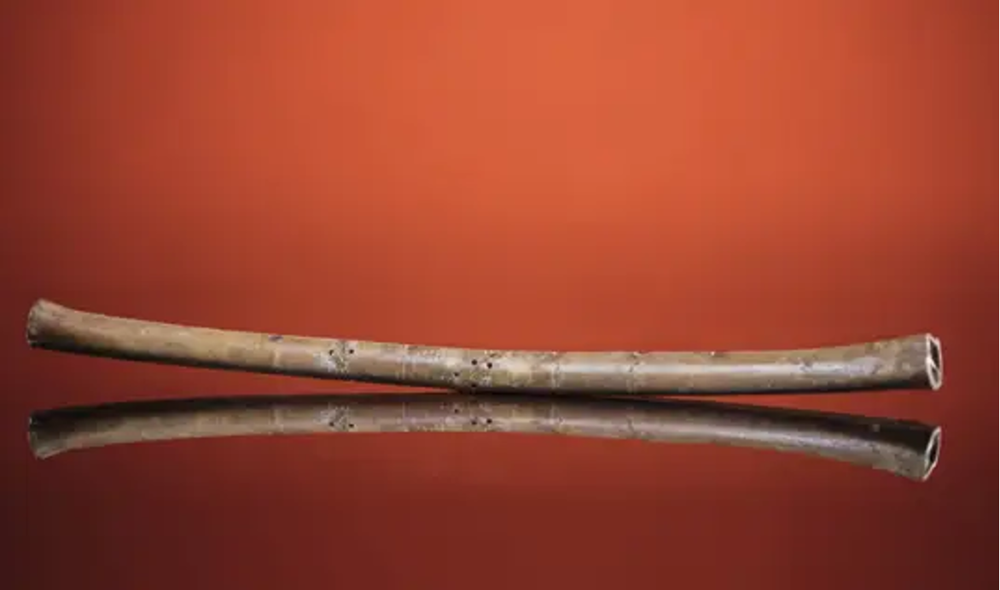

骨笛，贾湖骨笛是迄今为止中国考古发现的最古老的乐器。 该骨笛是用鹤类尺骨管制成。磨制精细，7孔。在第六孔与第七孔之间有一小孔，经测音可以发两变音，应为调整第七孔发音而钻的调音孔。值得注意的是，该墓出土有两件形制相似的骨笛。据测音研究，它们是一雌一雄，印证了中国自古雌雄笛的传统。 此笛经试奏，证明是一种竖吹骨笛，也是后世竖笛或洞箫类乐器的祖型。当时的人们利用此笛吹奏出有节奏的音符，以此表达对生活的感受和对神灵的尊敬